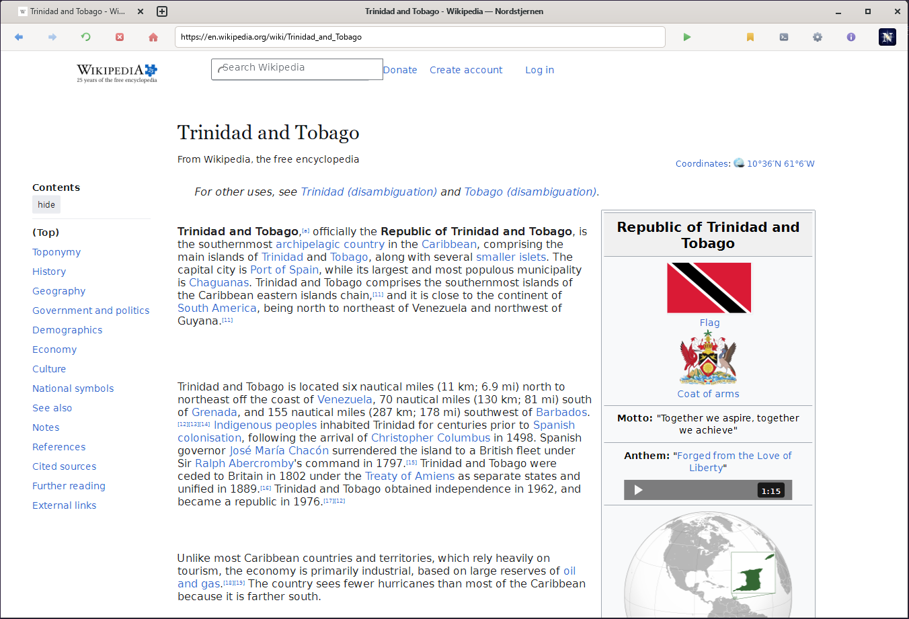

Nordstjernen Browser 1.0.0 released!
Today, 5 June 2026, we are proud to announce the first stable release of the Nordstjernen Browser. Nordstjernen is a web browser, written from scratch in C, focused on supporting the HTML and CSS standards. It runs on Windows, Mac and Linux, with an Android port in progress. Nordstjernen is built in Norway.
Nordstjernen Browser version 1.0.0 is available now! Read the full release notes here, or jump straight to the downloads.
{kind=link}

HTML Standard. Behaviour is measured against the spec text, section by section, not against another browser. See the standards table below and docs/HTML-compatibility.md.
Secure. Landlock + seccomp sandbox · PIE · full RELRO · Intel CET · no JIT.
Minimalism. The whole engine is about 88,000 lines of C written by Claude and Codex (93 files in src/, excluding the vendored lexbor, QuickJS and Wuffs libraries) — small enough for one person to read and audit end-to-end.
Nordstjernen has no JIT so it is much more secure, and can still be fast enough. It ships no telemetry of any kind.
news
5 JUN 2026 · Nordstjernen 1.0.0 released — the first stable release. Release notes »
31 MAY 2026 · Nordstjernen 0.8.1 released. Release notes »
28 MAY 2026 · Nordstjernen 0.8.0 released. Release notes »
24 MAY 2026 · Nordstjernen 0.7.0 released. Release notes »
specifications
| language | C · ~88 kLOC, fully auditable |
|---|---|
| html / css | lexbor 3.0.0 (parser, WHATWG URL, selectors) |
| javascript | quickjs-ng v0.14.0 — bytecode interpreter, no JIT (W^X holds process-wide) |
| images | Wuffs v0.4 (PNG / GIF / BMP / JPEG) |
| ui | GTK 4 · one window per page, no tab strip |
| network | libcurl · HTTP/2 · gzip + brotli + zstd |
| hardening | Landlock + seccomp sandbox · PIE · full RELRO · Intel CET · no JIT |
| privacy | no telemetry · partitioned cookies · HSTS / CSP / mixed-content blocking |
| platforms | linux · windows · macos |
| license | NSL-1.0 → MIT after 10 years |
download
Latest tagged release: Nordstjernen 1.0.0 — released 5 June 2026. full release notes »
For platform-specific builds, use the nightly builds. They are rebuilt
from main each night and point at the latest code — bleeding
edge, expect rough edges.
| Windows | nordstjernen-windows-x86_64.zip |
|---|---|
| macOS | nordstjernen-macos.dmg |
| Debian | nordstjernen-debian-amd64.deb |
| Ubuntu | nordstjernen-ubuntu-amd64.deb |
| openSUSE | nordstjernen-opensuse-x86_64.rpm |
| Linux (portable) | nordstjernen-linux-x86_64.zip |
| Alpine (musl) | nordstjernen-alpine-x86_64.apk · .zip |
| Java API (JDK 21) | nordstjernen-java.jar · sources · javadoc · API docs |
| Source | nordstjernen-src.tar.xz |
| Checksums | SHA256SUMS · all nightly files |